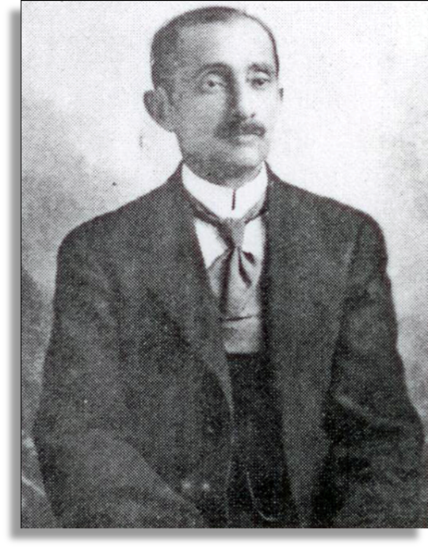
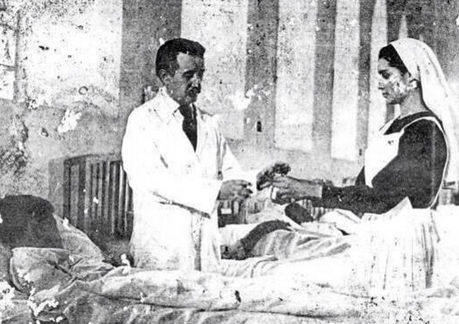
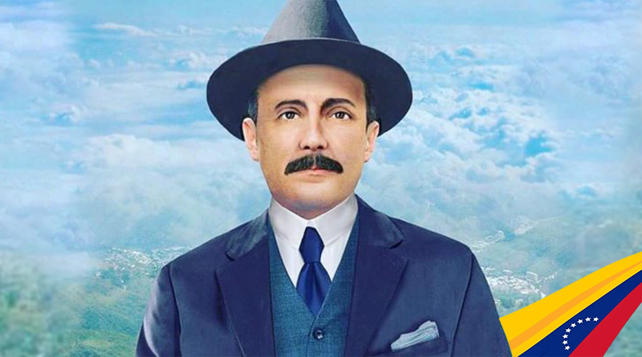
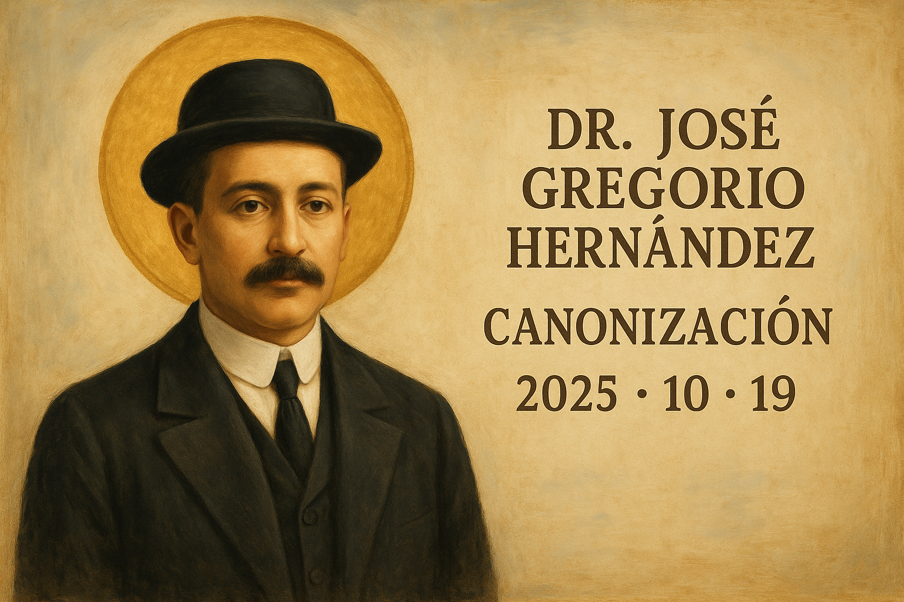
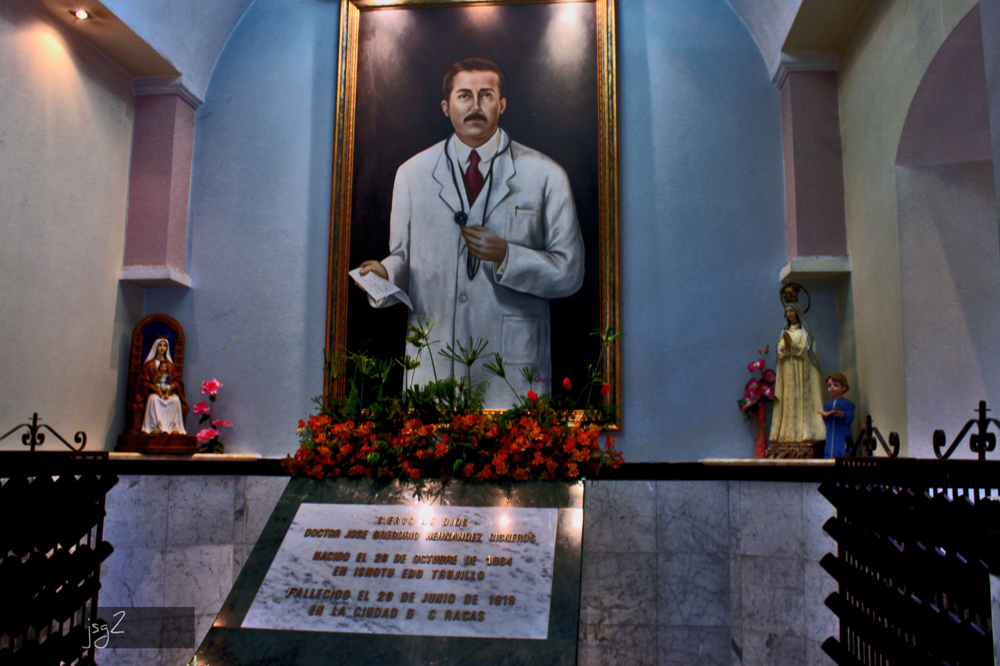
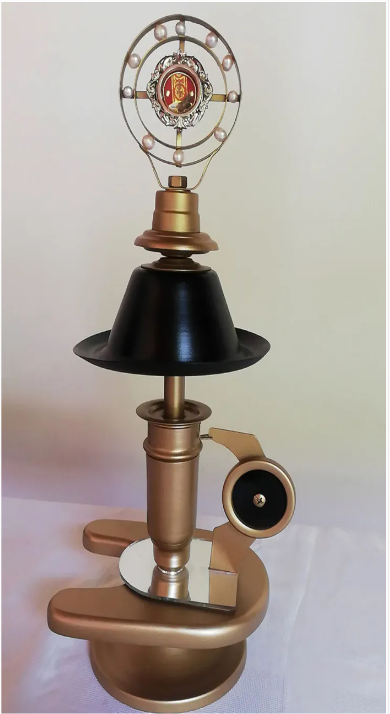

San José Gregorio Hernández - El Médico de los Pobres
Biografía
Nacimiento y Primeros Años
José Gregorio Hernández Cisneros nació el 26 de octubre de 1864 en Isnotú, Estado Trujillo, Venezuela. Desde su niñez mostró una profunda inclinación hacia el estudio y una especial sensibilidad hacia el sufrimiento ajeno, cualidades que marcarían toda su vida.
Formación Académica
Realizó sus estudios de medicina en la Universidad Central de Venezuela en Caracas, graduándose como Doctor en Medicina con honores en 1888. Su sed de conocimiento lo llevó a Europa, donde completó estudios de especialización en bacteriología, histología normal y patológica, y fisiología experimental en las prestigiosas universidades de París y Berlín.
Contribuciones Científicas
El Dr. Hernández fue pionero en la introducción de la medicina científica moderna en Venezuela. Fundó en la Universidad Central de Venezuela las cátedras de Histología Normal y Patológica, Fisiología Experimental y Bacteriología. Venezuela le debe la introducción del microscopio y otros importantes adelantos científicos que revolucionaron la práctica médica en el país.
Vida Espiritual
Sobre todo, José Gregorio brilló por la santidad de su vida, siendo ejemplo de cristiano convencido y fiel cumplidor de su deber. Su vida espiritual se fundamentaba en tres pilares: la Comunión diaria, una hora de oración cotidiana y sus frecuentes visitas a Jesús Sacramentado. Estas prácticas le dieron fuerzas para dedicarse a la caridad con toda su alma.
Fue ferviente Terciario Franciscano y profesó una tierna devoción a Nuestra Señora de las Mercedes, Patrona de Caracas. En varias ocasiones intentó seguir la vida religiosa, ingresando en 1908 a la orden de los Hermanos de las Escuelas Cristianas (La Salle), aunque tuvo que abandonarla por problemas de salud.
El Médico de los Pobres
Mereció el título de "Médico de los Pobres", reconocimiento que recibió del pueblo venezolano por su extraordinaria caridad. No solo visitaba gratuitamente a los pacientes necesitados, sino que él mismo les compraba las medicinas de su propio bolsillo. Su consultorio estaba siempre abierto para los más humildes, y nunca rechazó a quien solicitara su ayuda, sin importar la hora del día o de la noche.
Su Muerte
El 29 de junio de 1919, en uno de estos actos de caridad, mientras caminaba por las calles de Caracas para atender a un paciente, fue atropellado por uno de los primeros automóviles que circulaban en la ciudad. Murió poco después a causa de las heridas, a los 54 años de edad. Dios lo sorprendió haciendo caridad cuando lo llamó a su presencia.
Reconocimiento de la Iglesia
Desde su muerte, el pueblo venezolano comenzó a venerarlo espontáneamente, atribuyéndole numerosos favores y milagros. Los innumerables testimonios de gracias recibidas por su intercesión movieron a introducir su causa de beatificación.
El 16 de enero de 1986, el Santo Padre Juan Pablo II declaró públicamente que el Dr. José Gregorio Hernández había practicado las virtudes cristianas en grado heroico, otorgándole el título de Venerable. Este fue un paso fundamental en su camino hacia los altares.
Labor Médica y Científica

El Dr. Hernández dedicado a su labor médica
El Dr. Hernández fue pionero en la introducción de la medicina científica moderna en Venezuela. Fundó el Laboratorio de Fisiología Experimental, fue el primer profesor de bacteriología del país e introdujo el microscopio en Venezuela para la investigación médica, revolucionando así la práctica científica en el área de la salud.
Como docente, formó a numerosas generaciones de médicos venezolanos, transmitiéndoles no solo conocimientos científicos de vanguardia, sino también su profundo sentido de la vocación médica como servicio al prójimo.
Devoción Popular y Legado
Desde su muerte, el pueblo venezolano comenzó a venerarlo espontáneamente, atribuyéndole numerosos milagros y favores. Su tumba en el Cementerio General del Sur en Caracas se convirtió en lugar de peregrinación constante, donde miles de fieles acuden a pedir su intercesión.
Los venezolanos lo invocan en sus necesidades, especialmente en asuntos de salud, y mantienen viva su memoria colocando su imagen en hogares, consultorios médicos y hospitales. Su figura trasciende lo religioso para convertirse en un símbolo nacional de servicio y dedicación al prójimo.
- Máxima que guió su vida
Beatificación y Canonización
El 30 de abril de 2021, el Papa Francisco autorizó la promulgación del decreto que reconoció un milagro atribuido a su intercesión, abriendo el camino para su beatificación.
Fue beatificado el 30 de abril de 2021 en Caracas, convirtiéndose en el primer beato venezolano.

Ceremonia de beatificación en Caracas, 2021
🎉 ¡CANONIZACIÓN HISTÓRICA! 🎉
El 19 de octubre de 2025, el Beato José Gregorio Hernández será elevado a los altares y declarado SANTO por la Iglesia Católica.
Esta canonización representa un momento histórico para Venezuela y toda América Latina, siendo el primer santo venezolano reconocido oficialmente por la Iglesia. Su memoria litúrgica se celebra el 26 de octubre.

Virtudes que lo Caracterizaron
Su Legado Perdura
El Dr. José Gregorio Hernández es venerado en toda Venezuela y América Latina como modelo de médico cristiano, científico comprometido y hombre de fe. Su ejemplo de servicio desinteresado a los más necesitados continúa inspirando a nuevas generaciones de profesionales de la salud.
Galería de Imágenes
En su juventud

Su tumba en Caracas

Reliquias del santo